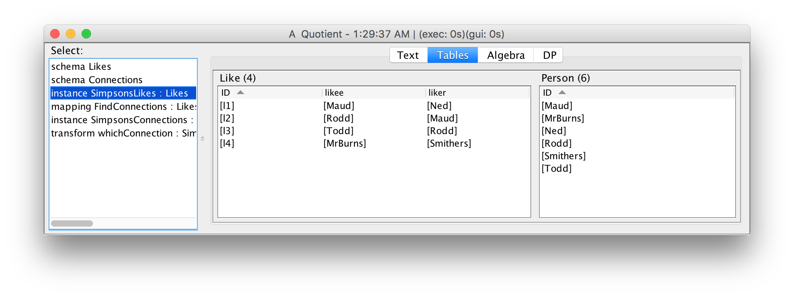
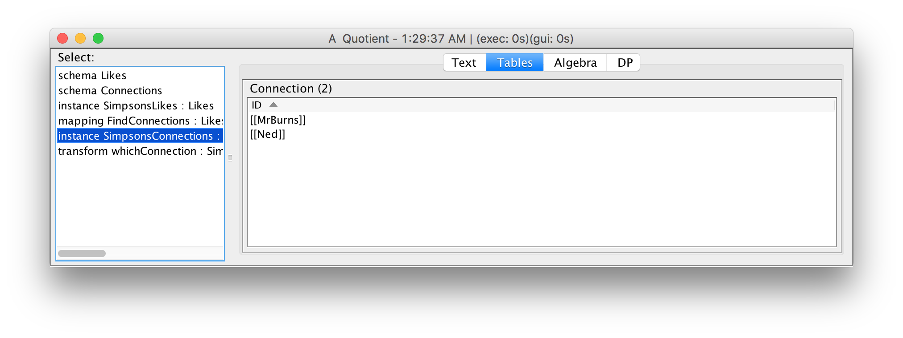
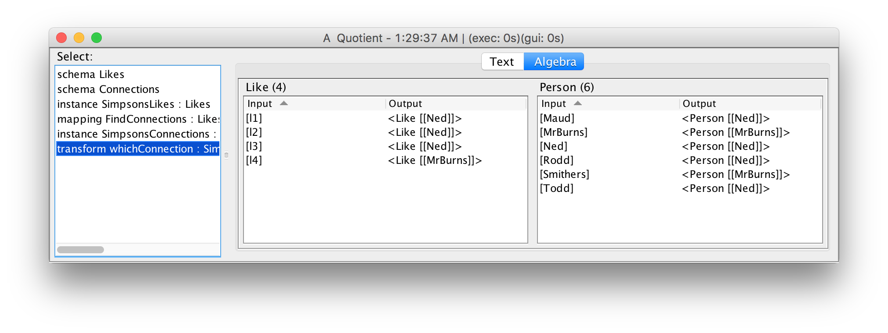
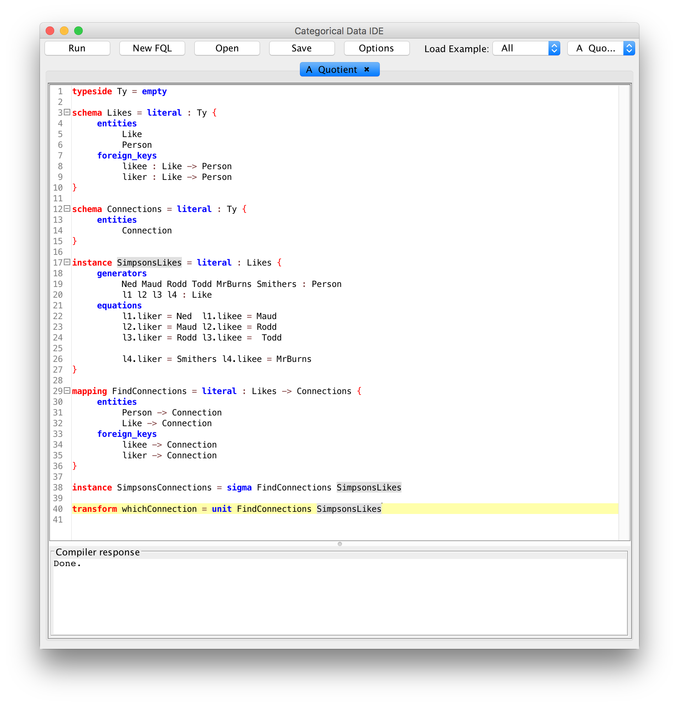

Categorical Databases
Home |
Download |
Getting Started |
Manual |
Wiki |
Papers |
Screen Shots |
Github |
Google Group |
Conexus |
Contact
Quotients and Merging
Computing the quotient of a set by an equivalence relation (a so-called tuple merge) is a common data integration operation that is unwieldly in SQL but is easy in CQL, as we demonstrate below (built-in to the IDE with example name Quotient).
The example defines a source schema about people and who likes whom and a target schema with a single entity representing groups connected by liking. There is a single schema mapping from the source to the target, and CQL's sigma operation along this mapping computes the connected groups.
We start by defining a source schema for people and who likes whom. For brevity, we do not define any types (String, Integer, etc) and use the empty typeside:
typeside Ty = empty
schema Likes = literal : Ty {
entities
Like
Person
foreign_keys
likee : Like -> Person
liker : Like -> Person
}
Here is some sample data, taken from a popular TV show:
instance SimpsonsLikes = literal : Likes {
generators
Ned Maud Rodd Todd MrBurns Smithers : Person
l1 l2 l3 l4 : Like
equations
l1.liker = Ned l1.likee = Maud
l2.liker = Maud l2.likee = Rodd
l3.liker = Rodd l3.likee = Todd
l4.liker = Smithers l4.likee = MrBurns
}

Our goal is to group together all the people who are transitively connected by liking. The target schema contains a single entity called Connection:
schema Connections = literal : Ty {
entities
Connection
}
Next, we define a schema mapping (in fact, the only mapping possible) from Likes to Connections:
mapping FindConnections = literal : Likes -> Connections {
entities
Person -> Connection
Like -> Connection
foreign_keys
likee -> Connection
liker -> Connection
}
To find the connected groups, we use CQL's sigma operation:
instance SimpsonsConnections = sigma FindConnections SimpsonsLikes
The IDE reports that there are two groups, each of which is named by a particular representative of the group:
To determine which group a person is in, we use CQL's unit operation:
transform whichConnection = unit FindConnections SimpsonsLikes
A screen shot of the entire development is shown below:
